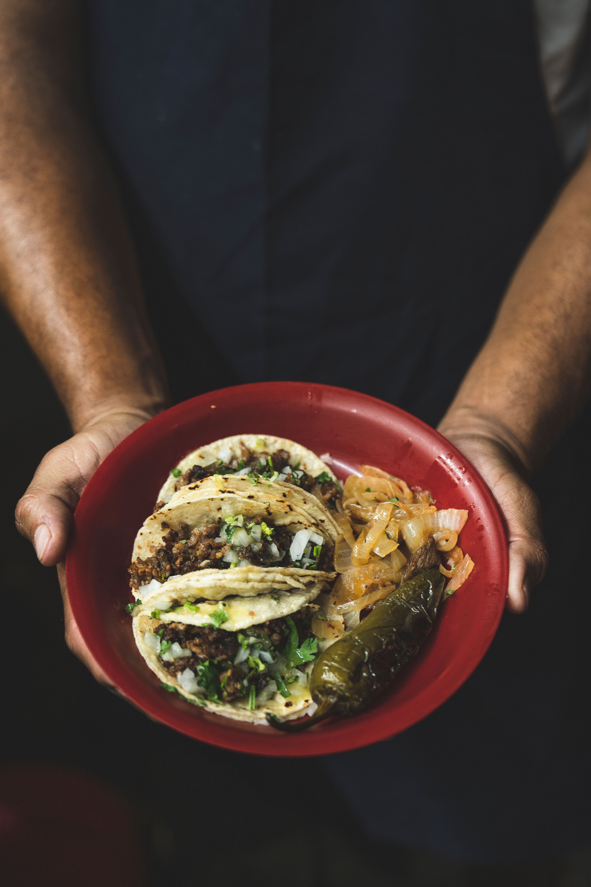

Home
Tacos

Description
Tacos are a traditional Mexican dish consisting of a folded or rolled tortilla filled with various ingredients.
Ingredients
- Marinated Skirt Steak
- Tortillas
- Guacamole
- White Onions
- Cilantro
Steps
- Grill the marinated skirt steak.
- While the steak cooks, heat up the tortillas.
- When steak is done, slice it and take the tortillas off the heat.
- Assemble the tacos with the sliced steak and desired toppings.
- Serve immediately.